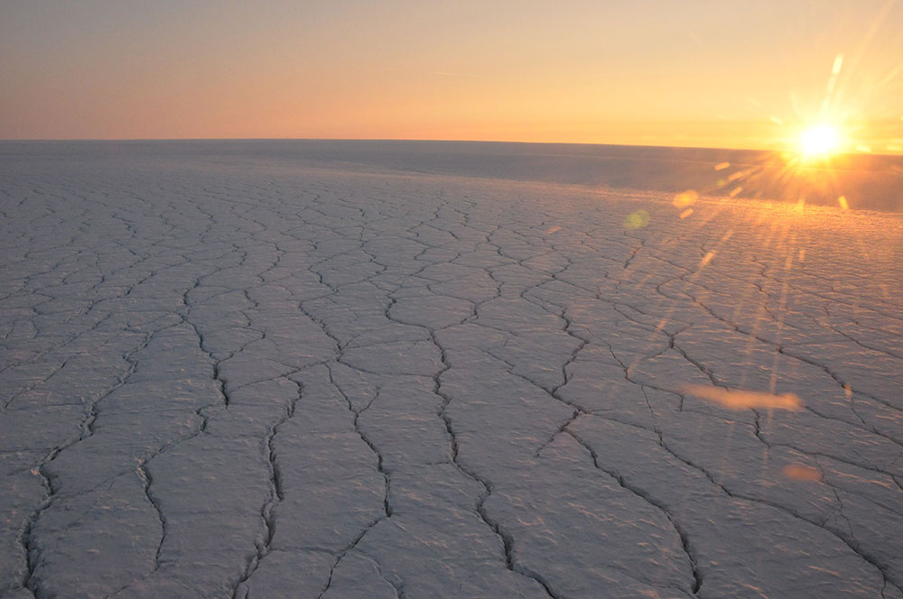

EarthMapps.io | Stories
Understanding the role of clouds in the climate of Greenland
The Greenland ice sheet (GrIS) is the second largest body of ice on Earth. Holding a potential of 7 m of global mean sea level rise, its rapidly increasing mass loss in response to global climate change will affect the entire planet. This mass loss is partly the result of a strongly decreasing surface mass balance (SMB), predominantly through increased meltwater runoff. Yet, the mechanisms involved in this decreasing SMB remain poorly understood. Recently, clouds have emerged as potential contributors to increased melt rates over the GrIS through their radiative warming of the surface, but Greenland-wide assessmentsof this effect are still largely lacking.
In addition, it has been shown that state-of-the-art climate models suffer from poor cloud representations over the GrIS, reflected in the large spread in simulated cloud properties and hence the cloud-related uncertainties for future projections of the GrIS. To cope with these issues, cloud observations are required in order to increase insights into the factors that govern cloud formation, maintenance and impacts on the GrIS.
 In the framework of the PhD of Kristof Van Tricht, we have been looking at the role of clouds over Greenland and all Polar regions. The research was focused on using observations from in-situ station data and satellite observations (i.e. mainly Cloudsat and Calipso). The main and most interesting conclusions of this research are nicely summarised in this press release accompanying the Nature Communications paper on Greenland melt runoff from clouds:
In the framework of the PhD of Kristof Van Tricht, we have been looking at the role of clouds over Greenland and all Polar regions. The research was focused on using observations from in-situ station data and satellite observations (i.e. mainly Cloudsat and Calipso). The main and most interesting conclusions of this research are nicely summarised in this press release accompanying the Nature Communications paper on Greenland melt runoff from clouds:
Greenland’s ice sheet is the second largest ice mass in the world – the largest is Antarctica. The ice sheet is losing mass at a high speed and increasingly contributes to the sea level rise on our planet. The role of clouds in this loss of snow and ice has never been calculated before, nor can it be deduced from theoretical climate models. For lack of observations, the different models do not agree on the importance of clouds over the ice sheet.
“Clouds always have several effects”, lead author Kristof Van Tricht xplains. “On the one hand, they help add mass to the ice sheet when it snows. On the other, they have an indirect effect on the ice sheet as well: they have an impact on the temperature, and snow and ice react to these changes by melting and refreezing. That works both ways. Clouds block the sunlight, which lowers the temperature. At the same time, they form a blanket that keeps the surface warm, especially at night. In this study, we examine the net result of these two indirect effects on the entire Greenland ice sheet.”
The researchers used specific satellite observations to detect clouds over the Greenland ice sheet from 2007 to 2010. They compared the results with ground-based observations. The researchers combined these observations with snow model simulations and climate model data to map the net effect of clouds.
“Over the entire Greenland ice sheet, clouds raise the temperature, which triggers additional meltwater runoff: 56 billion tons per year – a third more than clear skies. Contrary to what you would expect, this effect is not so much visible during the daytime melting process, but rather during the following night. A snowpack is like a frozen sponge that melts during the day. At night, clear skies make a large amount of meltwater in the sponge refreeze. When the sky is overcast, by contrast, the temperature remains too high and only some of the water refreezes. As a result, the sponge is saturated more quickly and excess meltwater drains away.”
The study highlights the need for accurate cloud representations in climate models that aim to estimate the amount of meltwater. “With climate change at the back of our minds, and the disastrous consequences of a global sea level rise, we need to understand these processes to make more reliable projections for the future. Clouds are more important for that purpose than we used to think.”
 Kristof has also done some nice work on i) developing improved cloud-base height detections by ceilometer instruments, robust and low-cost devices that are frequently deployed in polar regions, and ii) developing smart approaches to retrieve downwelling surface radiative fluxes from CloudSat and CALIPSO satellite cloud observations for any given land-based point-of-interest in polar regions.
Kristof has also done some nice work on i) developing improved cloud-base height detections by ceilometer instruments, robust and low-cost devices that are frequently deployed in polar regions, and ii) developing smart approaches to retrieve downwelling surface radiative fluxes from CloudSat and CALIPSO satellite cloud observations for any given land-based point-of-interest in polar regions.
These approaches finally have allowed us to use satellite observations to evaluate simulated clouds and radiation over both Polar ice sheets and oceans in state-of-the-art atmospheric reanalyses (ERA-Interim and MERRA-2) and the CMIP5 climate model ensemble. The results were published in Geophysical Research letters and show that:
Clouds play a pivotal role in the surface energy budget of the Polar regions. Here we use two largely independent datasets of cloud and surface downwelling radiation observations derived by satellite remote sensing (2007-2010) to evaluate simulated clouds and radiation over both Polar ice sheets and oceans in state-of-the-art atmospheric reanalyses (ERA-Interim and MERRA-2) and the CMIP5 climate model ensemble.
Firstly, we show that, compared to CERES-EBAF, CloudSat-CALIPSO better represents cloud liquid and ice water path over high latitudes, owing to its recent explicit determination of cloud phase that will be part of its new R05 release.
The reanalyses and climate models disagree widely on the amount of cloud liquid and ice in the Polar regions. Compared to the observations, we find significant but inconsistent biases in the model simulations of cloud liquid and ice water, as well as in the downwelling radiation components. The CMIP5 models display a wide range of cloud characteristics of the Polar regions, especially with regard to cloud liquid water, limiting the representativeness of the multi-model mean. A few CMIP5 models (CNRM, GISS, GFDL, and IPSL_CM5b) clearly outperform the others, which enhances credibility in their projected future cloud and radiation changes over high latitudes.
Given the rapid changes in Polar regions and global feedbacks involved, future climate model developments should target improved representation of Polar clouds. To that end, remote sensing observations are crucial, in spite of large remaining observational uncertainties, which is evidenced by the substantial differences between the two datasets.
The story in the news
Several news media have picked up our story on the effect of Greenland clouds affecting meltwater runoff. You can find a short overview on altmetric.com or read the excellent piece in the Wasingthon Post.